China Employee Termination in 2026: Pulse Ops-Compass Brief for Foreign Employers
Key takeaways
- Foreign employers can reduce China termination risk by using an operations compass: legal north, evidence east, payroll south, closure west.
- Route legality is the start, not the finish; execution alignment determines dispute resilience.
- The most avoidable failures remain cross-functional handoff errors.
- A compass format helps non-local leaders orient quickly under time pressure.
- Legal depth is included as appendix support, not the lead narrative.
Pulse opening: fast orientation for global teams
When teams outside China run termination actions, risk often rises because priorities are unclear in the moment. A compass model solves this by giving one directional check per control domain: Are we legally aligned (north)? Are records coherent (east)? Are payments consistent (south)? Are closure files complete (west)?
Plain-language legal context first
China is not an at-will termination system. Employer-initiated termination generally requires a lawful basis under the Labor Contract Law framework, plus coherent evidence and process records that can survive labor-dispute review.
Core legal anchors:
- Labor Contract Law (route and severance framework)
- Implementation Regulations (Decree No. 535)
- SPC labor-dispute interpretation (evidence/procedure scrutiny)
Operational implication: legal basis without execution consistency is fragile.
Ops compass: directional control model
North — Legal route integrity
- Green: One clear statutory route rationale.
- Risk signal: Conflicting route language.
- Action: Immediate hold and canonical route memo.
East — Evidence and chronology integrity
- Green: Complete, versioned, contradiction-free timeline.
- Risk signal: Missing links or conflicting records.
- Action: Freeze progression until reconciliation closes.
South — Settlement/payroll/tax alignment
- Green: Terms and payroll coding match.
- Risk signal: Mismatch near payroll lock.
- Action: Legal-payroll co-sign correction before release.
West — Closure evidence integrity
- Green: Payment proof + closure archive complete.
- Risk signal: Closure requested with missing evidence.
- Action: Keep case open until packet completion.
Center — Communication and local-validation discipline
- Green: Approved script + city-level validation complete.
- Risk signal: Script drift or unresolved local interpretation.
- Action: Pause outreach and/or block final action.
Why this works for foreign employers
The compass format is brief enough for executive review while still operationally specific. It improves cross-time-zone alignment and lowers decision latency by translating legal complexity into directional controls and immediate actions.
Scenario snapshots
Scenario A: East failure before outreach
Route is acceptable, but chronology conflicts appear. East turns red, outreach pauses, reconciliation completes, then case resumes.
Scenario B: South failure near lock
Settlement is signed but payroll mapping is inconsistent. South turns red, release is held, legal-payroll mapping is corrected, then payment proceeds.
Daily SOP by role
HR
- Run compass checks daily for active cases.
- Enforce hold rules on red directional signals.
- Log owner + ETA for unresolved items.
Legal
- Own north route integrity.
- Co-sign south mapping issues.
- Provide concise risk comments.
Manager
- Use approved script only.
- Escalate factual changes immediately.
Payroll/Finance
- Validate settlement-to-payroll mapping pre-lock.
- Confirm tax assumptions and archive proof.
Compliance/Ops
- Audit signal aging and repeated failure patterns.
- Track SLA compliance and recommend control updates.
Required document checklist
- Canonical route memo
- Versioned chronology log
- Script acknowledgment record
- Settlement mapping sheet
- Payroll/tax reconciliation worksheet
- City-level validation memo
- Closure evidence packet
What to do now
- Add compass fields (North/East/South/West/Center) to active trackers.
- Define hard hold rules for North/East/South red status.
- Add pre-lock South validation checkpoint.
- Standardize city-validation memo process.
- Review weekly directional failure trends.
Legal depth appendix (secondary)
This brief is grounded in the Labor Contract Law, Decree No. 535 implementation rules, and SPC labor-dispute interpretation, with practical context from China Briefing, Littler, ICLG, and PwC.
Disclaimer
This content is informational only and does not constitute legal, tax, or employment advice. Employers should seek qualified PRC legal and tax counsel for case-specific decisions.
Sources
- National People’s Congress — Labor Contract Law of the PRC (English): http://www.npc.gov.cn/zgrdw/englishnpc/Law/2007-12/13/content_1384064.htm (accessed 2026-03-04).
- State Council — Implementation Regulations of the Labor Contract Law (Decree No. 535): https://www.gov.cn/gongbao/content/2008/content_1124615.htm (accessed 2026-03-04).
- Supreme People’s Court — Interpretation on Application of Law in Labor Dispute Cases (Fa Shi [2020] No. 26): https://www.court.gov.cn/fabu/xiangqing/243981.html (accessed 2026-03-04).
- China Briefing / Dezan Shira — Employee Termination in China (updated 2025-10-17): https://www.china-briefing.com/news/employee-termination-in-china/ (accessed 2026-03-04).
- Littler — Key Recent Developments in China’s Employment Law: https://www.littler.com/news-analysis/asap/key-recent-developments-chinas-employment-law-china-us-comparative-perspective (accessed 2026-03-04).
- PwC Worldwide Tax Summaries — PRC Individual: Taxes on Personal Income: https://taxsummaries.pwc.com/peoples-republic-of-china/individual/taxes-on-personal-income (accessed 2026-03-04).
- ICLG / Zhong Lun — Employment and Labour Laws and Regulations: China: https://iclg.com/practice-areas/employment-and-labour-laws-and-regulations/china (accessed 2026-03-04).
Need local employment support in China?
If you need a compliance-first partner for hiring, payroll, and risk controls in China, China-Payroll.com can help evaluate the right setup.
Image Prompt Pack
Create a 16:9 hero image for article title: 'China Employee Termination in 2026: Pulse Ops-Compass Brief for Foreign Employers'. Scene: global operations team evaluating workforce model options for China market entry. Include motifs: decision matrix, org chart…